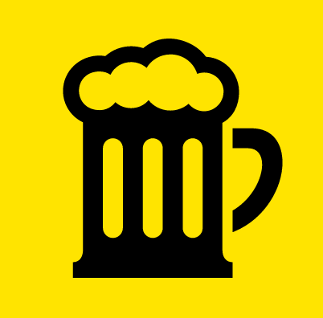

<h2 class="ionic-blue">Progressive Webapps</h2>

<ul>
    <li>
        Applications contenues dans le navigateur
    </li>
    <li>
        Chargement rapide
    </li>
    <li>
        Mélange entre Web et Appli Mobile
    </li>
    <li>
        Pas d’application à télécharger
    </li>
</ul>

<section>
    
    
</section>

<a href="https://deanhume.github.io/beer/">deanhume.github.io/beer</a>


